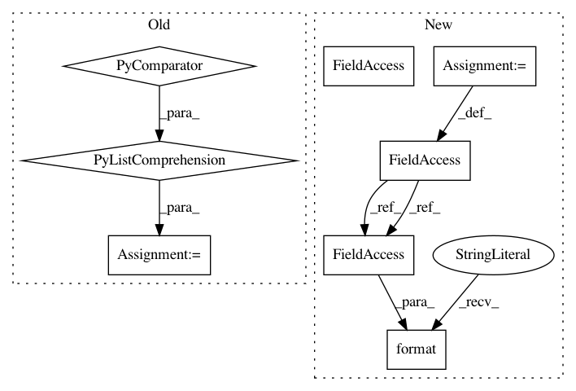

b7988369f77e12525604e2613b279c13f041f484,scripts/pose/simple_pose/validate.py,,,#,83
Before Change
net.hybridize()
if opt.dsnt:
heatmap_size = [int(i/4) for i in input_size]
net_dsnt = DSNT(size=heatmap_size[::-1])
net_dsnt.initialize(ctx=context)
net_dsnt.hybridize()
After Change
else:
net.hybridize()
else:
model_name = "deploy"
net = mx.gluon.SymbolBlock.imports("{}-symbol.json".format(opt.model_prefix),
["data"], "{}-0000.params".format(opt.model_prefix))
net.hybridize(static_alloc=True, static_shape=True)
print("Inference on model {} started!".format(model_name))
// calibration on FP32 model
def calibration(net, val_data, opt, ctx, logger):
In pattern: SUPERPATTERN
Frequency: 3
Non-data size: 8
Instances
Project Name: dmlc/gluon-cv
Commit Name: b7988369f77e12525604e2613b279c13f041f484
Time: 2019-12-04
Author: wuxun.zhang@intel.com
File Name: scripts/pose/simple_pose/validate.py
Class Name:
Method Name:
Project Name: dmlc/gluon-cv
Commit Name: b7988369f77e12525604e2613b279c13f041f484
Time: 2019-12-04
Author: wuxun.zhang@intel.com
File Name: scripts/pose/simple_pose/validate.py
Class Name:
Method Name:
Project Name: ray-project/ray
Commit Name: f31ee84bfdc6dc2325c8890412a965e509074d0a
Time: 2020-09-05
Author: wlx65005@gmail.com
File Name: streaming/python/runtime/transfer.py
Class Name: DataReader
Method Name: __init__
Project Name: ray-project/ray
Commit Name: 1b1466748f1db72835a594d73d502e9787e080a9
Time: 2020-09-04
Author: wlx65005@gmail.com
File Name: streaming/python/runtime/transfer.py
Class Name: DataReader
Method Name: __init__